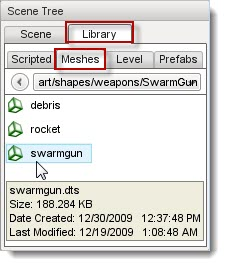
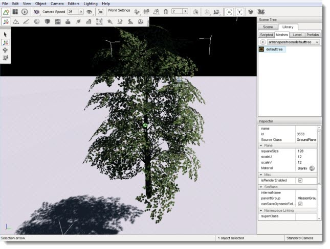

Introduction
3D models, referred to as shapes in these tutorials, make up most of
the objects in your game. This includes players, items, weapons,
vehicles, props, buildings, and so on. Currently Torque 3D supports
three model formats: DTS, COLLADA, and DIF.
DTS: Short for Dynamix Three Space, this is a proprietary format first developed by a company called Dynamix for its game named Tribes. This has been the primary format used by Torque Technology for importing and rendering 3D model information. The format is binary, which means it is not in a human readable format.
COLLADA: Short for COLLAborative Design Activity.
COLLADA is emerging as the format for interchanging models between DCC
(Digital-Content-Creation) applications. The file extension used to identify
COLLADA files is .dae which stand for "digital asset exchange". The COLLADA format has several key benefits: all of the geometry and texture information is readily available in a single file; nearly every major 3D modeling application is able to export directly to the COLLADA format; and the data is stored in an open standard XML schema, which means it can be read and tweaked manually, if need be, in any text editor rather than requiring a specific application.
DIF: Short for Dynamix Interior File, this is another proprietary format developed during the Tribes days which is used by Torque. DIFs (also called Interiors) are primarily used for buildings or other enclosing structures within game levels. This format is currently being deprecated and will eventually be removed from the engine. We recommend creating all of your asssets as DTS or COLLADA files.
Adding A DTS Model
Before you can add a DTS model to World Builder so that it can be placed in a game level, it must be created with an appropriate application. It must then be placed in a folder where the World Builder can find it. When the World Editor is started it searches the game directories for objects and automatically loads any that it finds into the appropriate sub-tabs of the Library based upon the folders they were found in. Placing a model into the
/game/core/art/shapes folder of your game project, or any sub-folder that you create, will allow the World Builder to find it and list it in the Library on start-up.
If you've added files or folders after starting World Builder those new entries will not appear until you have navigated out of a folder, or parent folder, and back in again.
Once a model is listed in the Library it is ready to be added to your game level. To add a model to your game level, select the Object Editor tool. Click the Library tab in the Scene Tree panel. Finally, select the Meshes sub-tab. Once the Meshes tab is open, select the entry from the drop down list. This list represents the directory containing your .dts model.

Click on the entry that contains your DTS model name. Hovering over the entry will display information about the model. Double-click the shape to automatically add it to your scene. The file should load extremely fast but you may not be able to see it right away. Where an object is placed in the scene depends upon the current drop location selection which can be set the menus Object
> Drop Location command. Move your camera from its current location until the shape is in view.
(click to enlarge)

Adding A COLLADA Model
Torque 3D also has the ability to load and render COLLADA models (.dae) . The process of adding a COLLADA shape is identical to adding a DTS. You will first need to create the COLLADA file and place it where the World Editor can find it then you may place it in a level.
Open the Library
> Meshes tab. Navigate to the directory containing your COLLADA model (.dae). If you hover over the item, you will get a brief file description.

Double clicking an object will open the COLLADA import dialog. For the purpose of this example, you can just click OK to load the mesh.

The file should load extremely fast, but you may not be able to see it right away. Where an object is placed in the scene depends upon the current drop location selection which can be set the menus Object
> Drop Location command. Pull your camera up and away from its current location until the shape is in view.
(click to enlarge)

Shape Properties
Each shape in a scene has properties which can be set like any other object using the
Object Editor. Clicking a shape in the scene or selecting it from the
Scene Tree will update the Inspector pane with information about that object. Shapes have their own unique set of properties.
Hover over a section of the image below for a description of the properties in that section:

Inspector
Name: TypeName. Optional global name of this object.
id: TypeCaseString. SimObjectId of this object. Read Only.
Source Class: TypeCaseString. Source code class of this object. Read Only.
Transform
Position: TypeMatrixPosition. Object world position.
Rotation: TypeMatrixRotation. Object world orientation.
Scale: TypePoint3F. Object world scale.
Media
shapeName: TypeFilename. Name and path of model file.
Rendering
playAmbient: TypeBool. Play the ambient animation. Animation itself must be named ambient.
meshCulling: TypeBool. Enables detailed culling of meshes.
originSort: TypeBool. Enables sorting by origin rather than bounds.
Collision
collisionType: TypeBool. TypeEnum. The type of mesh data to use for collision queries.
decalType: TypeEnum. The type of mesh data to return for decal generation.
allowPlayerStep: TypeBool. Allow a player to qalk up sloping polygons on collision.
Debug
renderNormals: TypeF32. Debug rendering mode which highlights shape normals.
forceDetail: TypeS32. For rendering at a particular detail for debugging.
Editing
isRenderEnabled: TypeBool. Only render if true (and if class is render-enabled, too).
isSelectionEnabled: TypeBool. Disables editor selection of this object.
hidden: TypeBool. Toggle visibility of this object.
locked: TypeBool. Toggle whether this object can be edited.
Mounting
mountPID: TypeBool. TypePID. PersistentID of the object this one is mounted to.
mountNode: TypeS32. Node this object is mounted to.
mountPos: TypeBool. Position where this object is mounted.
mountRot: TypeBool. Rotation of this object in relation to the mount node.
Object
internalName: TypeString. Optional name that may be used to lookup this object within a SimSet.
parentGroup: TypeSimObjectPtr. Group hierarchy parent of the object.
class: TypeString. Script class of this object.
superClass: TypeString. Script superClass of this object.
Persistence
canSave: TypeBool. Whether this object can be saved.
canSaveDynamicFields: TypeBool. True if dynamic fields added at runtime should be saved. Defaults to true.
persistentID: TypePID. Unique identifier for this object.
Dynamic Fields
N/A - None by default.
Conclusion
Importing 3D models into your level is a relatively simple process and is further aided by supporting a dynamic update process.
|
{kind=link}